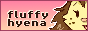

Profile
The Webmaster
Hiya there! Name is Hyena/Chyena (not actually my real name but I like going by that online).  Latinamerican, neurodivergent, queer, jumped to the chance of coding my own site because I have poor impulse control.
Latinamerican, neurodivergent, queer, jumped to the chance of coding my own site because I have poor impulse control.
I like drawing and retro stuff and coding - I'm improving! - and if you send me photos of guinea pigs I'll instantly consider you a friend. I also like writing and meeting new people, the last which seems oddly harder to do nowadays online than before social media.
I'm also an anime freak and very into all kinds of animation! I hope someday I can become a fulltime animator because that would be really cool.
The Website
Old-School Hyena is in equal parts a coding project, an online portfolio and just a place to store stuff I like. You can't trust social media accounts to keep all the important stuff, after all!
So far the site counts with an art section (where I put all the stuff that's mine), a storage section (where I put stuff that isn't mine), this about you see here and an upcoming blog. In the future I might add a shrines section because why not!
Revamp is still ongoing, but it should be all mostly working. Need to tweak a few accessibility things and work on the responsive layout, as well as deciding on how I want to style some pages. So don't be surprised if a few things break in lower screen resolutions!
That is all for now! If you wanna contact me you can email me or write on my guestbook! (Careful, uses cookies). If you have a Neocities account you can also follow me there! If we're mutuals, I'll add your button below! Have a nice day!
Oh, and if you wanna add my button , remember to right-click save it and upload it to your own site to save bandwidth! Affiliates are super welcome, just shoot me an email! Keep an eye out for better icons to come!